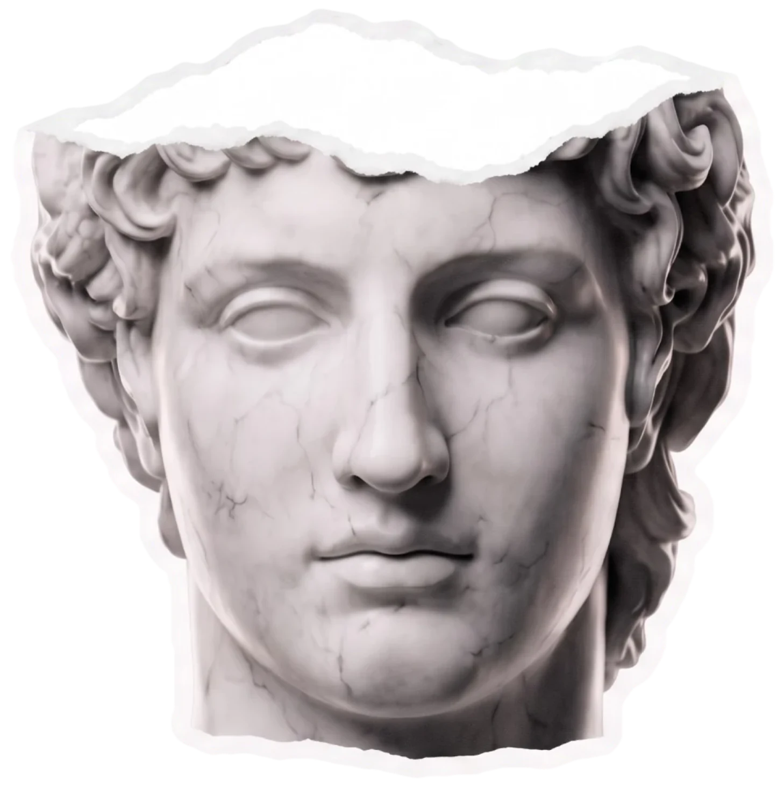
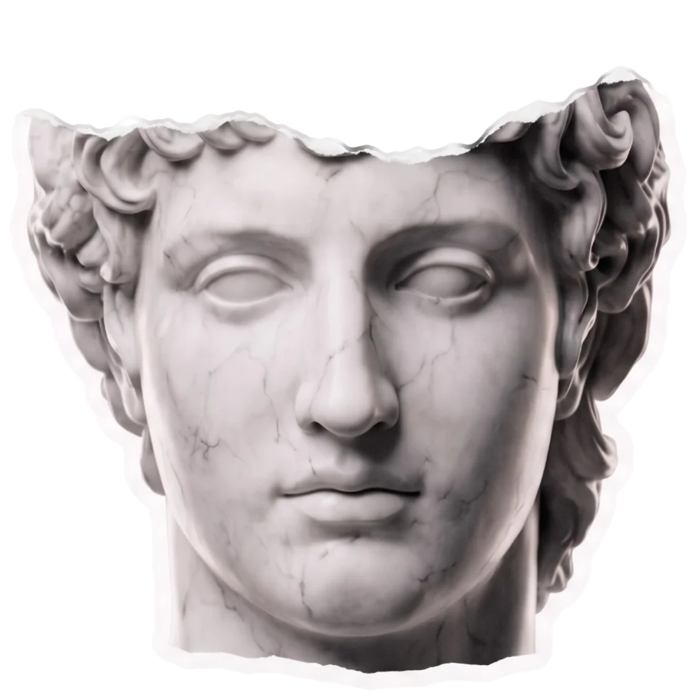

T
E
O
S
Тот самый
Греки подарили миру философию. Театр. Олимпийские игры.
И ещё кое-что.
Густой греческий йогурт.
Заглянуть глубже.Статуи делают из мрамора. Людей — из белка.
I. Основа.
Из белка строится каждая клетка.
II. Защита.
Из белка состоят антитела — опора иммунитета.
III. Проводник.
Доносит витамины и минералы туда,
где они нужны.IV. Полноценность.
В молочном белке — все
незаменимые аминокислоты.V. Сила.
Мышцы растут из белка.
Семь характеров.
На Олимпе стало тесно и каждому вкусу
досталось своё имя.


С чем ещё смешать греческий йогурт?
Со всем,
с чем хочешь!
Мы честно пытались найти,
с чем греческий йогурт
не смешивается. Не нашли.
Вот девять доказательств
— от халвы до тирамису.
